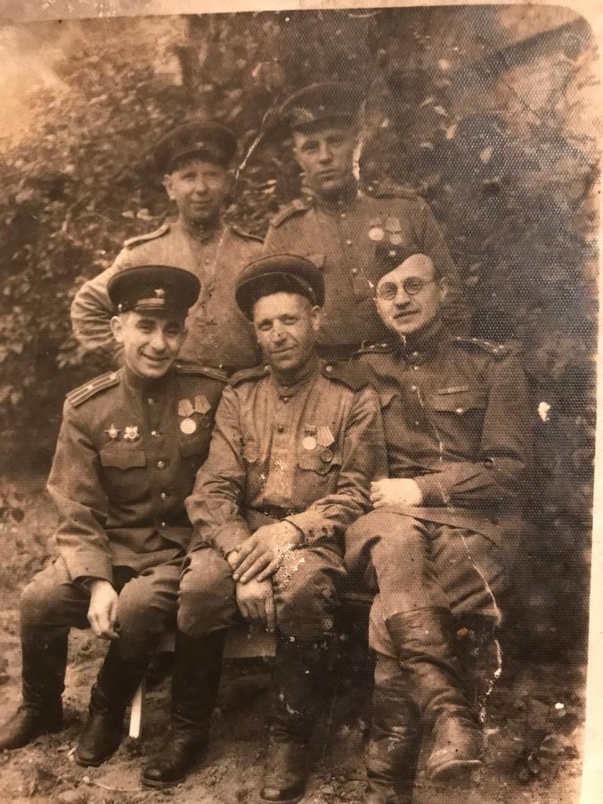
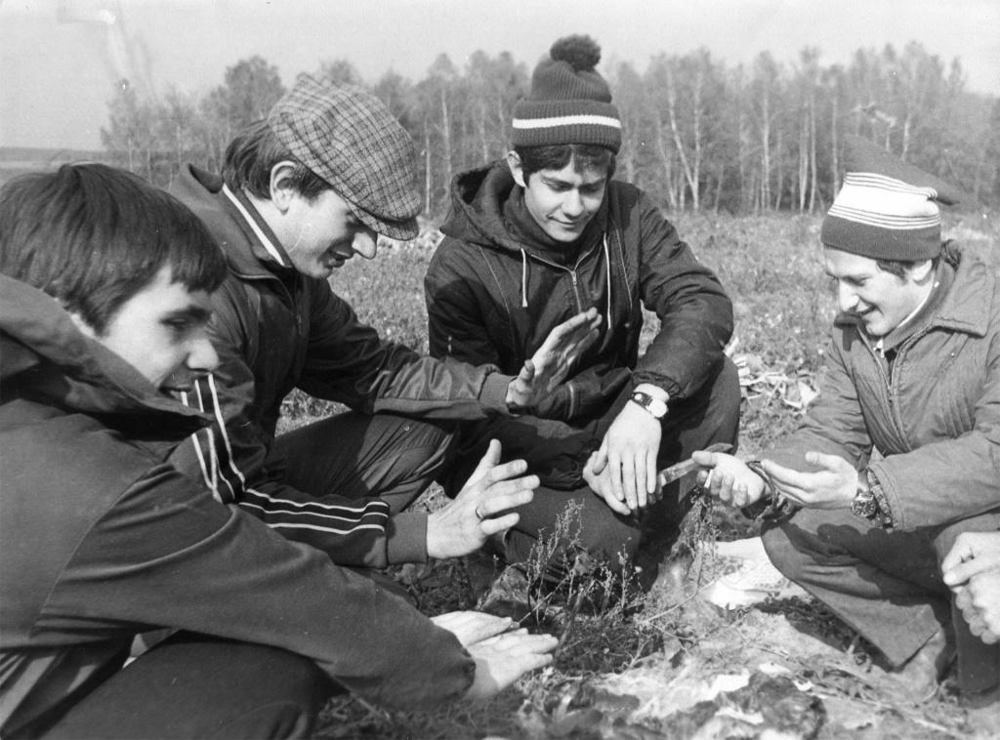
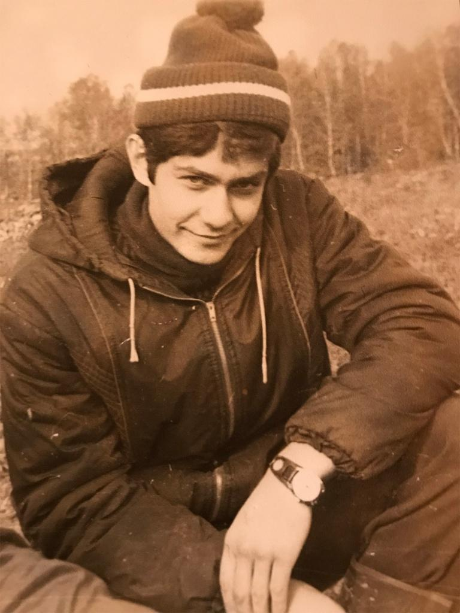
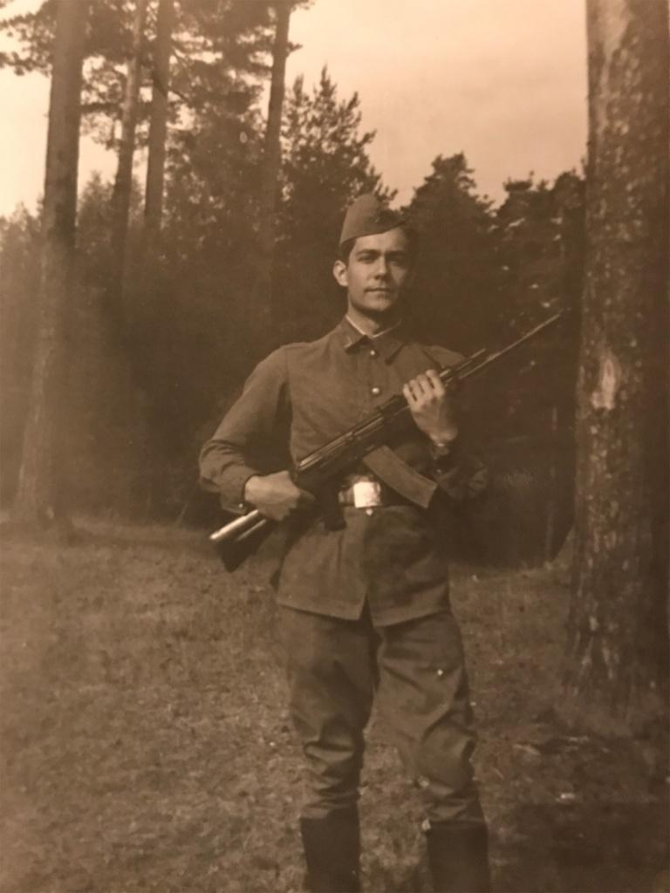

- Главная
- О движении
- Стать депутатом
- Новости
- Видео
- Анонс
- Важное
- Встреча в Хабаровске
- Встреча в Воронеже
- Встреча в Екатеринбурге
- Встреча в Казани
- Встреча в Комсомольске-на-Амуре
- Встреча в Костроме
- Встреча в Крыму
- Встреча в Миассе
- Встреча в Смоленске
- Встреча в Сталинграде / Волгограде
- Встреча в Тамбове
- Встреча в Челябинске
- Встреча с жителями Калинина / Твери
- Встреча с жителями Краснодара
- Встреча с жителями Нижнего Тагила
- Выражаем поддержку
- ГлавТема Народ
- Годовщина Движения
- Известные люди
- Информационное агентство «АВРОРА»
- Итоги недели на радио "Комсомольская Правда"
- Канал "Pravda"
- Канал "Независимая Студия"
- Канал Красная Линия
- Митинги
- Молодёжное движение
- Парк "Тайган"
- ПОЛИТИНФОРМ
- Прямая трансляция. Стрим
- Региональные отделения движения
- Съезд Движения 07.11.2019
- Федеральное ТВ
- Цитаты
- Школа Политпросвета
- Фото
- мероприятия
- Контакты

Лидер движения «За новый социализм» Платошкин Николай Николаевич
Николай Николаевич Платошкин
— российский дипломат и историк. Доктор исторических наук, доцент, заведующий кафедрой международных отношений и дипломатии Московского гуманитарного университета. Автор книг.
Биография
Николай Платошкин родился 19 октября 1965 года в городе Мещерино Ступинского района Московской области, русский. Родители работали в совхозе: мать (окончила академию имени Тимирязева) — агрономом, отец (окончил Институт механизации сельского хозяйства имени Горячкина) — инженером.
Фото. Победители (дедушка Клюков Николай Дмитриевич, сидящий в середине)Окончил Чулковскую среднюю школу № 20 с золотой медалью, там же получил права тракториста-машиниста 3-го класса широкого профиля.
В 1982 году поступил в МГИМО МИД СССР на факультет международных отношений (Западное отделение), который с отличием окончил в 1987 году.
Фото (МГИМО, на картошке)Фото (МГИМО, на картошке)В 2003 году окончил спецкурс для руководящего состава при Дипломатической академии МИД РФ.
С 1987 по 2006 год работал в российских дипломатических представительствах в ФРГ и США.
Офицер запаса. Срочную военную службу не проходил.
Фото. (На боевом посту)Работа в дипломатических представительствах
С 1987 по 1992 годы работал в должности атташе в посольствах СССР и Российской Федерации в ФРГ.
С 1992 по 1995 годы — в четвёртом Европейском департаменте МИД РФ.
С 1995 в должности первого секретаря вновь был направлен в дипломатическое представительство РФ в Германии, в Берлин, где и проработал до 1998 года. Платошкину Н.Н., по его же признанию, удалось добиться возвращения звания почётного гражданина города Берлина первому Советскому коменданту Берлина Николаю Берзарину, так как после воссоединения Германии в 1990 году все советские граждане были лишены такого звания. Также, Платошкин Н.Н. помог в сохранении монумента Воин-освободитель в Трептов парке, так как монумент собирались снести.
В 1998 году возглавил отдел Армении МИД РФ.
С мая 2004 по 2006 годы в должности вице-консула работал в консульстве Российской Федерации в Хьюстоне. Стоял у истоков открытия Русского культурного центра в столице Техаса.
Научная и преподавательская деятельность
Основные сферы научной деятельности: история Германии, история стран Латинской Америки, история Испании, история Чехии, вопросы текущих международных отношений и внешней политики России, современная политика ФРГ.
В 2003 году защитил кандидатскую диссертацию на тему «Мемельский (Клайпедский) вопрос в международных отношениях», а в 2009 году — докторскую на тему «Причины и ход Берлинского кризиса 1953–1961 гг».
Владеет немецким, чешским, английским и испанским языками. В своих работах опирается на ранее неизученные источники, зачастую на иностранных языках, в том числе данные из архивов, документы, опубликованные малым тиражом и т. д. В частности, в работе «Весна и осень чехословацкого социализма» автор, опираясь на малоизвестные отечественному исследователю документы на чешском языке, проанализировал ход реформ в Чехословакии 1960-х годов и их влияние на взаимоотношения ЧССР и СССР, сделал вывод о том, что экономические реформы Дубчека, зайдя в тупик и доведя Чехословакию до грани дефолта, стали причиной сознательного ухудшения отношений правительства Дубчека с Советским Союзом. Вопреки общепринятому в современной историографии мнению, Платошкин доказывает в своей работе, что реформы «пражской весны» привели страну к экономическому кризису, аналогичному тому, что СССР испытал в годы «перестройки». В то же время автор доказывает, что Советский Союз не был настроен против этих реформ и не оказывал на них никакого воздействия, рассматривая их как внутреннее дело ЧССР, а военное вмешательство Советского Союза было связано исключительно с началом антисоветской риторики чехословацкого правительства и угрозой переориентации на западный блок.
В 2009 году по итогам творческого конкурса на лучшие материалы, опубликованные в «Военно-историческом журнале» (№ 12, 2008), редакцией журнала Платошкину была присуждена вторая поощрительная премия за статью «Берлинская „блокада“ 1948–1949 гг. Мифы и реальность», помещённой в рубрике «Из истории военно-политических отношений».
В настоящее время Платошкин является заведующим кафедрой международных отношений и дипломатии Московского гуманитарного университета. 25 мая 2018 года был завершён двухгодичный курс лекций «Германия в военное и послевоенное время» в рамках вечерних курсов Университета Дмитрия Пожарского.
Общественная и политическая деятельность
С 1988 года кандидат в члены КПСС. В 1989 году отказался от вступления, мотивируя этот шаг несогласием с политикой Генерального Секретаря ЦК КПСС Михаила Горбачёва.
В начале января 2019 года на своей странице в социальной сети Facebook Николай Платошкин разместил видео, где объявил о намерении создать общественно-политическое движение «За новый социализм» и изложил основные пункты программы этого движения.
В вопросе событий «Бархатной революции» в Армении поддержал народные протесты и приход к власти Н. Пашиняна.
Выступал с критикой социально-экономической политики В. В. Путина и правительства РФ, в частности выступил с критикой бюджетного правила, введённого министерством финансов, и плавающего курса рубля.
Участвовал в организованных КПРФ протестах против пенсионной реформы в Москве, призывал сторонников участвовать в митингах.
На выборах глав субъектов Федерации 9 сентября 2018 года призывал голосовать против «Единой России». Осенью 2018 года на выборах главы республики Хакасия, поддержал кандидата от КПРФ В. Коновалова, а на губернаторских выборах в Приморье — А. Ищенко.
9 декабря 2018 года выступил против возможной передачи Курильских островов Японии, раскритиковав риторику официальных лиц России. 20 января 2019 года выступил на митинге «Курилы — наши».
Эксперт на ТВ и радио
Николай Платошкин выступает в качестве эксперта в различных теле- и радиопередачах: «60 минут» на телеканале ВГТРК, «Время покажет» на Первом канале, «Место встречи» на телеканале НТВ, «Право голоса» на телеканале ТВ Центр, «Говорит Москва» и другие.
В январе 2019 года в кулуарах сессии ПАСЕ Платошкин защитил ведущую программы «60 минут» на телеканале «Россия-1» Ольгу Скабееву от действий украинского депутата Борислава Ефимовича Берёзы (Бляхера).
Семейное положение
Женат.
Библиография
Автор множества монографий, учебных пособий и статей, в том числе и в таких рецензируемых ВАК журналах как «Международная жизнь», «Военно-исторический журнал», «Журнал зарубежного законодательства и сравнительного правоведения».
Диссертации
- Платошкин Н. Н. Мемельский (Клайпедский) вопрос в международных отношениях: диссертация … кандидата исторических наук: 07.00.15. — М., 2003. — 159 с.
- Платошкин Н. Н. Причины и ход Берлинского кризиса 1953—1961 гг.: диссертация … доктора исторических наук: 07.00.03. — МГПУ им. И. П. Шамякина. — М., 2009. — 406 с.
Монографии
- Платошкин Н. Н. Жаркое лето 1953 года в Германии: впервые о восстании рабочих в ГДР. — М.: Олма-Пресс, 2004.
- Платошкин Н. Н. Гражданская война в Испании. 1936—1939 гг. — Олма-Пресс, 2005.
- Платошкин Н. Н. Убийство президента Кеннеди. Ли Харви Освальд — убийца или жертва?: [русская версия преступления]. — М.: Молодая гвардия, 2007.
- Платошкин Н. Н. История Мексиканской революции: в 3 томах. — М.: Ун-т Дмитрия Пожарского, 2011. — Т. 1: Истоки и победа 1810—1917 гг.
- Платошкин Н. Н. История Мексиканской революции: в 3 томах. — М.: Ун-т Дмитрия Пожарского, 2011. — Т. 2: Выбор пути 1917—1928 гг.
- Платошкин Н. Н. История Мексиканской революции: в 3 томах. — М.: Ун-т Дмитрия Пожарского, 2011. — Т. 3: Время радикальных реформ 1928—1940 гг.
- Платошкин Н. Н. Чили 1970—1973 гг.: Прерванная модернизация. — М.: Ун-т Дмитрия Пожарского: РФСОН, 2011.
- Платошкин Н. Н. Интервенция США в Доминиканской республике 1965 года. — М.: Ун-т Дмитрия Пожарского: РФСОН, 2012.
- Платошкин Н. Н. Сандинистская революция в Никарагуа: предыстория и последствия. — М.: Ун-т Дмитрия Пожарского: РФСОН, 2015. (Холодная война. История Латинской Америки).
- Платошкин Н. Н. Гренадская революция и интервенция США (1979—1983 гг.). — М.: Изд-во МосГУ, 2015.
- Платошкин Н. Н. Венесуэла и Чавес: биография страны и человека. — М.: Изд-во МосГУ, Кафедра истории и международных отношений, 2015.
- Платошкин Н. Н. Весна и осень чехословацкого социализма. Чехословакия в 1938—1968 гг.: в 2 частях. — М.: Ун-т Дмитрия Пожарского: РФСОН, 2016. — Т. 1: Весна чехословацкого социализма, 1938—1948 гг.(Холодная война).
- Платошкин Н. Н. Весна и осень чехословацкого социализма. Чехословакия в 1938—1968 гг.: в 2 частях. — М.: Ун-т Дмитрия Пожарского: РФСОН, 2016. — Т. 2: Осень чехословацкого социализма, 1948—1968 гг.(Холодная война).
- Платошкин Н. Н. Че Гевара. — М.: Молодая гвардия, 2017. (ЖЗЛ; Вып. 1818 [1618]).
- Платошкин Н. Н. Американская разведка против Гитлера. — М.: Вече, 2017. (Гриф секретности снят).
- Платошкин Н. Н. Американская разведка против Сталина. — М.: Вече, 2017. (Гриф секретности снят).
- Платошкин Н. Н. Роберт Кеннеди. — М.: Тов-во науч. изд. КМК, 2017.
- Платошкин Н. Н. Танго со смертью: в 2 томах. — М.: Тов-во науч. изд. КМК, 2018.
- Платошкин Н. Н. Танго со смертью: в 2 томах. — М.: Тов-во науч. изд. КМК, 2018.
Переводы
- Люттвак Эдвард Николае. Возвышение Китая наперекор логике стратегии. — М.: Университет Дмитрия Пожарского, 2016.
- Люттвак Эдвард Николае. Стратегия. Логика войны и мира. — М.: Университет Дмитрия Пожарского, 2016.
- Люттвак, Эдвард Н. Государственный переворот: Практическое пособие = Coup d’État: A Practical Handbook. — М.: Университет Дмитрия Пожарского, 2012.
Редактор
- Украинский национализм как угроза национальной безопасности России: Материалы межвузовского круглого стола (Москва, 25 февраля 2015 г.) / науч. ред. Н. Н. Платошкин. — М.: Изд-во МосГУ, 2015.
- Борьба против фальсификации истории Второй мировой войны: 70-летию Великой Победы посвящается: Материалы межвузовского круглого стола (Москва, 23 апреля 2015 г.) / науч. ред. Н. Н. Платошкин. — М.: Изд-во МосГУ, 2015.
- Концепция смены режима как инструмент внешней политики США: Материалы международного межвузовского круглого стола (Москва, 6 апреля 2016 г.) / отв. ред. Н. Н. Платошкин. — М.: Изд-во МосГУ, 2016.
Меню раздела
Присоединиться к движению «За новый социализм»!
Заполнить анкету
Календарь мероприятий
Уважаемые единомышленники и сторонники!
Если Вы желаете присоединиться, помочь Движению или принять участие в мероприятиях проводимых Движением в Москве, просим Вас связаться с кураторами по Вашим федеральным округам